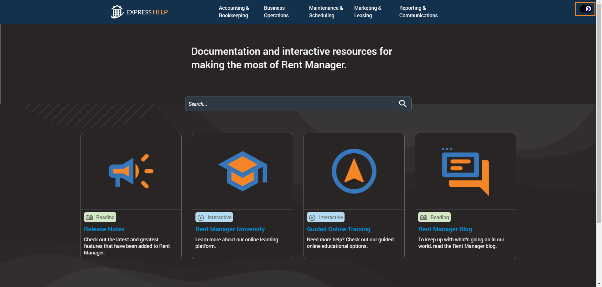

Source: https://rmxhelp.rentmanager.com/Topics/Express/Release-Notes/2025/12.2501.htm
12.250100 Release Notes
The release begins rolling out on January 21, 2025.
New Features
To comply with Minnesota’s new electronic filing requirement for 2024 CRPs, a tool was added to Rent Manager that makes it easy to review and upload a .CSV file to Minnesota’s e-Services website.
Beginning with the tax year 2024, the state of Minnesota mandates that all Certificates of Rent Paid (CRPs) be filed electronically through their e-Services portal. To comply with this requirement, Rent Manager now lets you easily generate a CSV file that you can upload directly to Minnesota’s e-Services system.
To use the Minnesota e-Services portal, you must have an e-Services account. Additionally, Minnesota law still requires that you provide applicable renters with their CRPs by January 31st. These certificates must now be generated or downloaded from the e-Services site.
For more information, refer to the Export Minnesota CRP topic in Express help.
Transform your lease renewal process with our latest enhancements!
The Lease Renewal tool was updated, giving your lease renewal workflow even more control, clarity, and organization. This powerful tool allows you to present multiple renewal term options to your tenants, so they can choose their ideal term and sign their new lease through Tenant Web Access (TWA). Additionally, these updates work seamlessly with your Blue Moon lease document workflow, allowing you to send a Blue Moon lease to a tenant once they select their term option in TWA. As part of this update, the following changes were made in Rent Manager Express:
-
The Lease Renewal Board was added, which provides a panoramic view of your lease renewal workflow so you can quickly track all renewal offers and tenant responses. Additionally, this tool makes it easy to spot when a renewal offer requires a signature and alert icons display to notify you when a tenant's current lease and/or renewal offer has expired, ensuring timely engagements that keep momentum going. What’s more, you can execute critical actions (write letters, send emails, add history/note items, void or delete offers, etc.) directly from the board. For more information, refer to the Lease Renewal Board (Page) topic in Express help.
-
The Renewal Increases page was added, which lets you view expiring leases and easily manage rent increases as you prepare renewal offers. This tool also enables you to create a workflow when establishing and approving new rent values. For more information, refer to the Renewal Increases (Page) topic in Express help.
-
The Needs Renewal Offers dashboard tile was added, which allows you to quickly create offers directly from the tile and easily determine Leases Expiring Within a specified number of days that do not have an offer created. For more information, refer to the Needs Renewal Offers (Dashboard Tile) topic in Express help.
Additionally, the following changes were made in Rent Manager 12 and Express:
-
The Tenants/Prospects privilege group Lease Renewal Offers were updated with Add, View, Edit, and Delete privileges.
-
The Tenant Web Access – Renewal Offers system web preferences were added with an option to determine how renewal offers are completed via signable documents. If enabled, renewal offers are completed automatically once both the tenant(s) and landlord add their signatures to the signable document. Additionally, a Decline Offers section was added, which allows you to choose whether tenants can decline offers in TWA. The Renewal Offer Aging automated notification was added, which lets you automatically send an email or text message to tenants and/or Rent Manager users when a renewal offer needs attention and is a specified number of Days Old. For more information, refer to the Renewal Offer Aging (Automated Notification) topic in Express help.
-
The Renewal Offer Accepted or Declined automated notification has been renamed Renewal Offer Status Updated and allows for additional renewal offer Status selections. For more information, refer to the Renewal Offer Status Updated (Automated Notification) topic in Express help.
Simplify your mid-month price adjustments with the new Recurring Charge Proration option!
Recurring Charge Proration system preference options were added, which enable you to seamlessly calculate and post prorated charges for mid-month price adjustments. This automated option eliminates manual calculations and errors and provides your tenants with clear and accurate billing—with an option to round charges to full dollar amounts.
As a part of this change, the General Options system preferences were updated with Prorate recurring charges when the charge starts or ends during posting month (if enabled for charge type) and Round prorated charges to the nearest dollar options.
Effortlessly transfer tenants with the new Tenant Transfer Wizard!
The Tenant Transfer wizard was added, which allows you to consolidate all the tasks associated with transferring a tenant from one unit to another into a single, guided process. This tool makes the creation of new prospect or tenant accounts seamless, provides enhanced visibility into tenant data, and includes permissions to access essential information. For more information, refer to the Tenant Transfer Wizard topic in Express help.
As part of this update, the following changes were made in Rent Manager Express:
-
The Unit Picker tool can be accessed outside of a prospect account so it can be used to apply some or all of a potential prospect’s preferences to the units at a selected property and view the units with matching results. You can then specify if the prospect is interested in the unit and/or wants to be placed on its Wait List. From there, you have the option to create a new prospect account that includes these preferences.
-
The General Options – Tenant Transfers system preferences were added, which allows you to determine which transfer methods are available in the Tenant Transfer wizard.
-
The Tenants/Prospects privilege group Access limited occupancy information for all properties was added, which, when checked, allows the user to access occupancy information from any property, regardless of their property permissions. Additionally, this privilege allows the user to create prospect accounts at any property, regardless of their property permissions.
Rent Manager Express help now supports dark mode!
We are excited to announce that Rent Manager Express help now supports dark mode. Dark mode is a specialized color scheme that darkens the background and uses light text, icons, and graphics to reduce eye strain and help prevent triggering low vision and photosensitive conditions. To change help to dark mode, use the toggle option at the top right of the screen.

Enhancements
Generating and exporting Rent Manager Express reports just got a lot more efficient and intuitive!
To simplify the process for generating reports in Express, individual buttons have been added for the most-used file formats, such as PDF and Excel. Additionally, you can now generate a report as a PDF and export it to Excel in a single step.
In addition to the report-generation updates, enhancements have also been made to Excel exports. Formulas are now maintained through the exports and additional formatting improvements have been made to eliminate cell merging, misaligned columns, and so on.
The Blue Moon integration was improved to make creating and completing your multifamily leases in Rent Manager a breeze!
Rent Manager's Blue Moon integration was updated to make the field mapping process easier with a sleek, user-friendly interface that streamlines every step. This enhancement allows you to effortlessly map Rent Manager system fields directly to Blue Moon, including pet and contact fields, for increased flexibility and lease form accuracy.
Tenant overpayments no longer auto-allocate to subsidy charges.
This update ensures that tenant overpayments will no longer be automatically applied to subsidy-covered charges. Instead, they will be directed to charges the tenant is responsible for, such as rent and late fees.
Never miss important business tasks and deadlines with the Reminders updates in Rent Manager Express!
The Reminders/Notifications tool was updated in Express, ensuring missed deadlines and meetings are a thing of the past. With this update, reminder notifications display as a pop-up and as a number on the  icon when you have an upcoming appointment or task. As a part of this update, Reminders personal preferences were added with an option to Disable Reminder Pop-Ups.
icon when you have an upcoming appointment or task. As a part of this update, Reminders personal preferences were added with an option to Disable Reminder Pop-Ups.
Easily update a tenant’s address with the Copy Address From Unit option.
A Copy Address From Unit option was added to the tenant Address tile, which copies the address of the tenant's unit to the address text box.